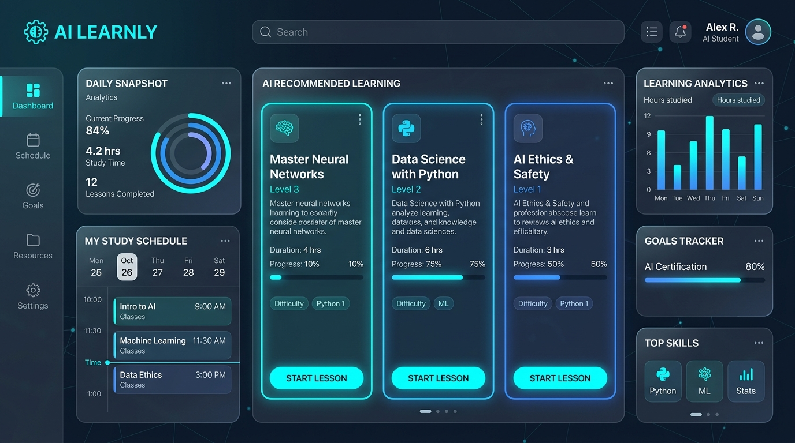

AI & SoftwareAI Personalized Learning Planner
An intelligent study assistant that creates customized learning schedules based on individual pace, topic mastery, and student deadlines, optimizing revision routines with adaptive recommendations.
Python
AI Concepts
Adaptive Logic
Web UI